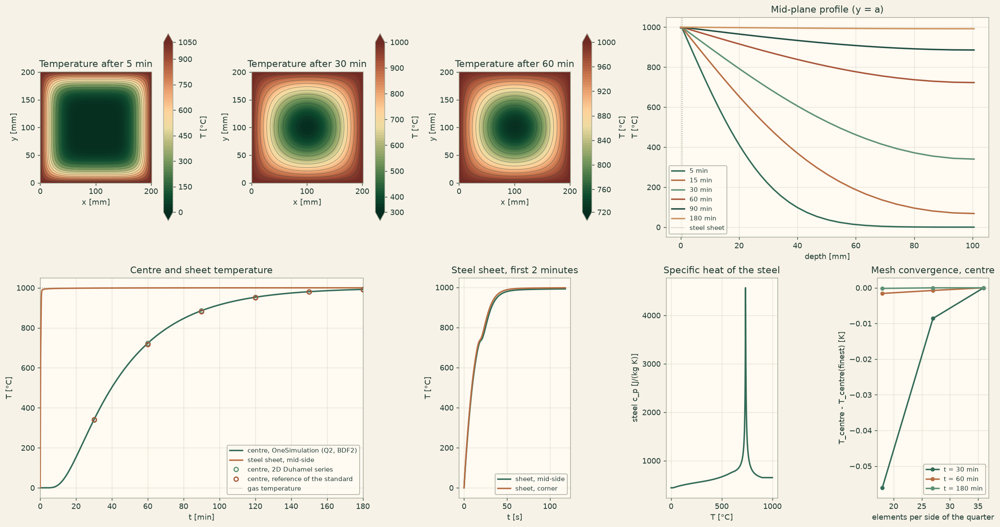

Docs › Examples › Steel-clad section exposed to fire
Heat transfer · 2D
Steel-clad section exposed to fire
A square insulation core clad in thin steel, heated from all sides by hot fire gas for three hours: the validation case of the fire-design standard.

What it computes
OneSimulation solves the nonlinear heat equation with temperature-dependent steel properties (including the heat-capacity peak of the phase change) in a conservative enthalpy form on graded quadratic hexahedra, with convective and radiative heating, integrated by adaptive variable-step BDF2 with Newton iterations.
What it checks
The centre temperature meets the standard's 1 % criterion at every check time and matches a 2D Duhamel series check to 0.3 K; mesh and time-step studies change it by less than 0.1 K.
The notebook
The complete notebook, cell by cell. Run it to produce the figures and the comparison printout.
A square section of side \(0.201\) m consists of a light insulating core (the filling) wrapped on all four sides in a steel sheet \(0.5\) mm thick. At \(t=0\) the whole section is at \(0\,^\circ\)C and is suddenly surrounded by hot gas at \(T_g=1000\,^\circ\)C. Every outer surface receives heat by convection and by grey-body radiation,
and the section heats up for 180 minutes. The temperature obeys
with constant properties in the filling and the temperature-dependent steel properties of EN 1993-1-2: the heat capacity rises from about 440 to a sharp peak of 5000 J/(kg K) at the austenite transformation near \(735\,^\circ\)C, the conductivity falls linearly from 54 to 27.3 W/(m K). This is validation example 3 of the German National Annex to EN 1991-1-2 (DIN EN 1991-1-2/NA:2010-12, informative annex on the validation of thermal calculation programs), which tabulates the temperature at the centre of the section every 30 minutes.
The problem is two-dimensional: the field depends on both coordinates of the cross section, with the corners heated from two sides. The section is symmetric about both mid-planes, so one quarter is computed and mirrored for the figures. OneSimulation's heat conduction works on volume meshes, so the quarter section is extruded by one element layer in \(z\) with insulated faces; the solution is then independent of \(z\) and depends on \((x, y)\) only. Boundary conditions on every face:
| face | condition | |---|---| | outer surfaces of the steel sheet (\(x=0\) and \(y=0\) of the quarter) | convection and radiation from the gas, \(q_\mathrm{in}\) above | | the two symmetry planes (\(x=a\), \(y=a\)) | symmetry (zero flux) | | the two faces of the extrusion layer (\(z=0\), \(z=\Delta z\)) | zero flux (2D section) |
Numerical method. - Space: continuous Galerkin finite elements with quadratic 27-node hexahedral Lagrange elements (Q2) on a block mesh graded geometrically from the 0.5 mm steel sheet (several elements across the sheet) to the centre. OneSimulation assembles the conductivity, capacity and surface (Robin) matrices, separately for the filling and the steel. - Nonlinearity: the temperature-dependent steel is written in conservative group form, enthalpy \(H(T)=\int\rho c_p\,\mathrm{d}T\) for the capacity and the Kirchhoff transform \(\phi(T)=\int k\,\mathrm{d}T\) for the conduction, both interpolated with the Q2 basis (C. A. J. Fletcher, Comput. Methods Appl. Mech. Eng. 37 (1983) 225); the nonlinear gas-side flux is interpolated the same way on the exposed surface. This makes the discrete energy balance exact and keeps the sharp capacity peak integrable. - Time: adaptive variable-step BDF2 (OneSimulation's variable-step BDF coefficients and step controller), started with one backward-Euler step, local error from the difference to a quadratic predictor (Milne's device), step size control on the maximum nodal temperature error. Steps land exactly on the 30-minute report times. - Nonlinear solver: Newton's method with the exact Jacobian, sparse direct LU per iteration.
Reference. (i) The tabulated reference temperatures of the standard at the centre of the section, with the acceptance criteria of the standard (deviation at most 1 % relative and 5 K absolute). The National Annex states that these values are the mean of several validated programs. (ii) An independent 2D check: inside the filling, the problem is linear, so the centre temperature follows from Duhamel's theorem with the exact Fourier series of a square with prescribed surface temperature (H. S. Carslaw and J. C. Jaeger, Conduction of Heat in Solids, 2nd ed., Oxford 1959, Sec. 6.3 and 1.14), driven by the computed temperature of the steel sheet. (iii) The global energy balance. (iv) A three-level mesh study (observed order, Richardson estimate) and a time-tolerance study.
from dataclasses import replace
import time
import numpy as np
from scipy.sparse import diags
from scipy.sparse.linalg import splu
from onesim.cad.d3 import Box, Regrouped
from onesim.materials import IsotropicSolid
from onesim.meshing import Geometric, Piecewise, StructuredHexahedralMesher, Uniform
from onesim.numerics import Numerics
from onesim.numerics.fem import FiniteElement, Lagrange
from onesim.numerics.linear import SparseDirect
from onesim.numerics.time import AdaptiveTimeStep
from onesim.numerics.time import variable_bdf_coefficients
from onesim.physics.heat_transfer import ConvectiveHeatFlux, HeatConduction, HeatFlux
from onesim.results.comparisons import convergence
from onesim.simulation import Problem, Simulation, regionwise
from onesim.visualization import theme, plots
theme.set()Parameters
Geometry and data of the validation example. Filling: \(k=0.05\) W/(m K), \(\rho=50\) kg/m³, \(c_p=1000\) J/(kg K). Steel: \(\rho=7850\) kg/m³, \(c_p(T)\) and \(k(T)\) from EN 1993-1-2, Sec. 3.4.1 (below 20 °C, outside the range of the standard, the 20 °C values are used).
side = 0.201
d = 0.0005
a = side / 2
dz = 0.002
k_fill, rho_fill, cp_fill = 0.05, 50.0, 1000.0
rho_steel = 7850.0
h_gas, emissivity, sigma = 10.0, 0.8, 5.670374419e-8
T0 = 273.15
T_gas = 1273.15
t_end = 180 * 60.0
report_minutes = np.array([30, 60, 90, 120, 150, 180])
reference_degC = np.array([340.5, 717.1, 881.6, 950.6, 979.3, 991.7])
alpha_fill = k_fill / (rho_fill * cp_fill)
print(f"filling diffusivity {alpha_fill:.1e} m^2/s, diffusion time (side/2)^2/alpha = "
f"{(a - d)**2 / alpha_fill / 60:.0f} min")
def cp_steel(T):
"""EN 1993-1-2 specific heat of carbon steel, J/(kg K); T in K."""
c = np.clip(np.asarray(T, float) - 273.15, 20.0, 1200.0)
return np.select(
[c < 600, c < 735, c < 900],
[425 + 7.73e-1 * c - 1.69e-3 * c**2 + 2.22e-6 * c**3,
666 + 13002 / (738 - np.minimum(c, 735.0)),
545 + 17820 / (np.maximum(c, 735.0) - 731)],
650.0)
def k_steel(T):
"""EN 1993-1-2 thermal conductivity of carbon steel, W/(m K); T in K."""
c = np.clip(np.asarray(T, float) - 273.15, 20.0, 1200.0)
return np.where(c < 800, 54 - 3.33e-2 * c, 27.3)
def _cp_antiderivative(c):
"""Antiderivative of the four EN 1993-1-2 branches (c in degC), branch by branch."""
return np.select(
[c < 600, c < 735, c < 900],
[425 * c + 7.73e-1 * c**2 / 2 - 1.69e-3 * c**3 / 3 + 2.22e-6 * c**4 / 4,
666 * c - 13002 * np.log(738 - np.minimum(c, 735.0)),
545 * c + 17820 * np.log(np.maximum(c, 735.0) - 731)],
650 * c)
_breaks = np.array([600.0, 735.0, 900.0])
_jumps = np.array([float(_cp_antiderivative(np.array(b - 1e-9)) - _cp_antiderivative(np.array(b + 1e-9)))
for b in _breaks])
_offsets = np.concatenate(([0.0], np.cumsum(_jumps)))
cp20 = float(cp_steel(293.15))
def enthalpy_steel(T):
"""H(T) = rho * int_{20 degC}^{T} c_p dT', J/m^3 (exact antiderivative of the EN law)."""
c = np.asarray(T, float) - 273.15
cc = np.clip(c, 20.0, 1200.0)
branch = np.searchsorted(_breaks, cc, side="right")
H = _cp_antiderivative(cc) + _offsets[branch] - _cp_antiderivative(np.array(20.0))
H = H + cp20 * np.minimum(c - 20.0, 0.0) + 650.0 * np.maximum(c - 1200.0, 0.0)
return rho_steel * H
def kirchhoff_steel(T):
"""phi(T) = int_{20 degC}^{T} k dT', W/m."""
c = np.asarray(T, float) - 273.15
cc = np.clip(c, 20.0, 1200.0)
lin = 54 * (np.minimum(cc, 800.0) - 20.0) - 3.33e-2 / 2 * (np.minimum(cc, 800.0)**2 - 400.0)
return (lin + 27.3 * (np.maximum(cc, 800.0) - 800.0) + k_steel(293.15) * np.minimum(c - 20.0, 0.0)
+ 27.3 * np.maximum(c - 1200.0, 0.0))
def gas_flux(T):
"""Heat flux leaving the surface (negative = heating) and its derivative."""
return (h_gas * (T - T_gas) + emissivity * sigma * (T**4 - T_gas**4),
h_gas + 4 * emissivity * sigma * T**3)Geometry and mesh
The quarter section \([0,a]^2\) is a box with three boundary groups (exposed faces, symmetry planes, layer faces). The structured hexahedral mesher covers it with \(n_s\) elements across the steel sheet, then \(n_f\) elements in the filling whose size grows geometrically from the sheet (first filling element as wide as a sheet element) to the symmetry plane: a piecewise grading, the same in \(x\) and \(y\), one element layer in \(z\). The Q2 space adds the mid-edge, mid-face and centre nodes.
section = Regrouped(source=Box(length=a, width=a, height=dz), groups={
"exposed": ("x_min", "y_min"), "symmetry": ("x_max", "y_max"), "layer_faces": ("z_min", "z_max")})
def section_mesh(n_s, n_f):
"""n_s uniform sheet elements, then n_f filling elements growing from the sheet width."""
side = Piecewise(((d, Uniform(n_s)), (a - d, Geometric(n_f, first=d / n_s))))
return StructuredHexahedralMesher(cells=(n_s + n_f, n_s + n_f, 1), grading=(side, side, Uniform(1))).generate(section)Model
The constant filling properties and the steel enter OneSimulation's HeatConduction as region-wise material values (the steel sheet is an L-shaped union of two boxes); the exposed faces carry a ConvectiveHeatFlux, the symmetry planes and layer faces an explicit zero HeatFlux. Because the assembled matrices are linear in the steel coefficients and in \(h\), three assemblies with different steel values and film coefficients separate the operators: the filling and steel conductivity matrices \(K_f\), \(K_s\) (steel with unit conductivity), the capacity matrices \(M_f\), \(M_s\) (steel with unit capacity) and the surface matrix \(B\) (unit film coefficient). The semi-discrete group form is
with nodal \(H\), \(\phi\) and gas-side flux \(q=-q_\mathrm{in}\). All steel coefficients sit inside elements (no element straddles the sheet surface), so the separation is exact.
steel = Box(length=d, width=a, height=dz) | Box(length=a, width=d, height=dz)
def material_with(k_s, c_s):
"""Filling and steel properties; rho*c_p per unit density (density = 1 kg/m^3)."""
base = IsotropicSolid(density=1.0, specific_heat_capacity=1.0, thermal_conductivity=1.0,
youngs_modulus=1e9, poisson_ratio=0.3, thermal_expansion_coefficient=0.0)
return replace(base, thermal_conductivity=regionwise(((steel, k_s),), default=k_fill, unit="W/m/K"),
specific_heat_capacity=regionwise(((steel, c_s),), default=rho_fill * cp_fill, unit="J/kg/K"))
def assemble(mesh, geometry, k_s, c_s, h):
model = HeatConduction(domain=geometry.domain(), material=material_with(k_s, c_s), heating=0.0)
b = geometry.boundaries
problem = Problem(name="Fire-exposed clad section (operator assembly)", geometry=geometry, physics=(model,),
boundary_conditions=(
ConvectiveHeatFlux(boundary=b.exposed, physics=model, heat_transfer_coefficient=h,
ambient_temperature=0.0),
HeatFlux(boundary=b.symmetry | b.layer_faces, physics=model, value=0.0)))
simulation = Simulation(problem=problem, mesh=mesh, numerics=Numerics(
spatial=FiniteElement(element=Lagrange(order=2)), linear_solver=SparseDirect()))
operator = simulation.solve_stationary().operators[model.model_id]
weak, system, _, _ = operator.weak_assembly(0.0)
return (system.matrix.tocsr(), weak.mass.matrix.tocsr(), np.asarray(operator.space.dof_coordinates))
def build_level(n_s, n_f):
start = time.time()
mesh = section_mesh(n_s, n_f)
xs = np.unique(np.round(np.asarray(mesh.coordinates)[:, 0], 12))
growth = np.diff(xs)[n_s + 1] / np.diff(xs)[n_s]
K_a, M_a, nodes = assemble(mesh, section, 1.0, 1.0, 1.0)
K_b, M_b, _ = assemble(mesh, section, 2.0, 2.0, 1.0)
K_c, _, _ = assemble(mesh, section, 1.0, 1.0, 2.0)
K_s, B, M_s = K_b - K_a, K_c - K_a, M_b - M_a
K_f, M_f = K_a - K_s - B, M_a - M_s
clean = lambda A: (A + A.T).tocsr() * 0.5
ops = dict(K_f=clean(K_f), K_s=clean(K_s), B=clean(B), M_f=clean(M_f), M_s=clean(M_s))
for name in ops:
ops[name].eliminate_zeros()
return dict(n=(n_s, n_f), xs=xs, growth=growth, mesh=mesh, nodes=nodes, seconds=time.time() - start, **ops)Solve
Newton-BDF2 step. With the variable-step BDF2 coefficients \(c_j\) of the accepted step history, a step solves
by Newton's method with the exact Jacobian \(\tfrac{c_0}{\Delta t}\big(M_f+M_s\,\mathrm{diag}(\rho c_p)\big)+K_f+K_s\,\mathrm{diag}(k)+B\,\mathrm{diag}(q')\) until the temperature update is below \(10^{-7}\) K. The local error is estimated as \(\tfrac27\max|T-T_\mathrm{pred}|\) with the quadratic extrapolation \(T_\mathrm{pred}\) of the last three states, normalised by \(\mathrm{atol}+\mathrm{rtol}\,|T|\), and passed to OneSimulation's AdaptiveTimeStep controller (BDF2 local error \(\propto\Delta t^3\)).
def integrate(level, rtol=2e-4, atol=0.02, max_step=60.0, keep_minutes=(5, 15, 30, 60, 90, 180)):
K_f, K_s, B, M_f, M_s = (level[k] for k in ("K_f", "K_s", "B", "M_f", "M_s"))
nodes = level["nodes"]
n = len(nodes)
controller = AdaptiveTimeStep(initial=0.05, minimum=1e-4, maximum=max_step,
relative_tolerance=rtol, absolute_tolerance=atol)
centre = int(np.argmin((nodes[:, 0] - a) ** 2 + (nodes[:, 1] - a) ** 2 + nodes[:, 2] ** 2))
sheet_mid = int(np.argmin((nodes[:, 0] - d) ** 2 + (nodes[:, 1] - a) ** 2 + nodes[:, 2] ** 2))
sheet_corner = int(np.argmin(nodes[:, 0] ** 2 + nodes[:, 1] ** 2 + nodes[:, 2] ** 2))
ones = np.ones(n)
def energy(T):
return M_f @ T + M_s @ enthalpy_steel(T)
T = np.full(n, T0)
states, times, steps = [T.copy()], [0.0], []
energies = [energy(T)]
trace = dict(t=[0.0], centre=[T0], sheet_mid=[T0], sheet_corner=[T0], q_in=[-float(ones @ (B @ gas_flux(T)[0]))])
kept = {}
stops = list(np.r_[np.array(keep_minutes, float) * 60.0, report_minutes * 60.0])
stops = sorted(set(stops))
t, dt, newton_total, rejected, start = 0.0, controller.initial, 0, 0, time.time()
while t < t_end - 1e-9:
stop = next(s for s in stops if s > t + 1e-9)
step = min(dt, stop - t)
order = 1 if len(steps) == 0 else 2
c = variable_bdf_coefficients(step, steps[::-1][: order - 1], order)
history = sum(c[j] * energies[-j] for j in range(1, order + 1))
if len(states) >= 3:
t_hist = np.array([times[-3], times[-2], times[-1]])
L = [np.prod([(t + step - t_hist[m]) / (t_hist[l] - t_hist[m]) for m in range(3) if m != l])
for l in range(3)]
predictor = L[0] * states[-3] + L[1] * states[-2] + L[2] * states[-1]
else:
predictor = states[-1].copy()
Tn = predictor.copy()
converged = False
for it in range(30):
q, dq = gas_flux(Tn)
F = (c[0] * energy(Tn) + history) / step + K_f @ Tn + K_s @ kirchhoff_steel(Tn) + B @ q
J = (c[0] / step) * (M_f + M_s @ diags(rho_steel * cp_steel(Tn))) + K_f \
+ K_s @ diags(k_steel(Tn)) + B @ diags(dq)
delta = splu(J.tocsc()).solve(-F)
Tn = Tn + delta
newton_total += 1
if np.max(np.abs(delta)) < 1e-7:
converged = True
break
if not converged:
dt = step / 4
rejected += 1
continue
error = (2.0 / 7.0) * np.max(np.abs(Tn - predictor) / (atol + rtol * np.abs(Tn))) if len(states) >= 3 else 0.0
if error > 1.0:
dt = controller.next_step(step, error, order=2)
rejected += 1
continue
t += step
steps.append(step)
states, times = (states + [Tn])[-3:], (times + [t])[-3:]
energies = (energies + [energy(Tn)])[-3:]
trace["t"].append(t)
trace["centre"].append(Tn[centre])
trace["sheet_mid"].append(Tn[sheet_mid])
trace["sheet_corner"].append(Tn[sheet_corner])
trace["q_in"].append(-float(ones @ (B @ gas_flux(Tn)[0])))
if any(abs(t - 60.0 * m) < 1e-6 for m in keep_minutes):
kept[int(round(t / 60))] = Tn.copy()
if error > 0:
dt = controller.next_step(step, error, order=2)
else:
dt = min(2 * step, max_step)
trace = {k: np.array(v) for k, v in trace.items()}
E_gain = float(ones @ (energy(states[-1]) - energy(np.full(n, T0))))
return dict(level=level, trace=trace, kept=kept, accepted=len(steps), rejected=rejected,
newton=newton_total, E_gain=E_gain, seconds=time.time() - start)
def at_minutes(run, minutes):
tr = run["trace"]
return np.array([tr["centre"][np.argmin(np.abs(tr["t"] - 60.0 * m))] for m in minutes])
levels = ((2, 16), (3, 24), (4, 32))
built = []
for n_s, n_f in levels:
level = build_level(n_s, n_f)
built.append(level)
print(f"mesh {n_s}+{n_f} elements per side: {level['mesh'].cell_count} Hex8 cells, {len(level['nodes'])} Q2 nodes, "
f"growth {level['growth']:.3f}, largest element {1e3 * np.diff(level['xs']).max():.1f} mm, "
f"smallest {1e3 * np.diff(level['xs']).min():.3f} mm (assembly {level['seconds']:.0f} s)")
print(f" checks: steel volume {level['M_s'].sum() / dz:.4e} m^2 (exact {side**2 / 4 - (a - d)**2:.4e}), "
f"exposed area {level['B'].sum() / dz:.5f} m (exact {2 * a:.5f})")
runs = []
for level in built:
run = integrate(level)
runs.append(run)
print(f"mesh {level['n']}: {run['accepted']} accepted / {run['rejected']} rejected BDF2 steps, "
f"{run['newton']} Newton iterations ({run['seconds']:.0f} s)")
tol_runs = {2e-4: runs[1]}
for rtol in (1e-3, 5e-5):
tol_runs[rtol] = integrate(built[1], rtol=rtol, atol=100 * rtol)
print(f"rtol {rtol:.0e}: {tol_runs[rtol]['accepted']} accepted steps ({tol_runs[rtol]['seconds']:.0f} s)")Comparison with the reference
Centre temperature against the standard. Acceptance criterion of the National Annex: at most 1 % relative and 5 K absolute deviation. The reference values are the mean of several programs. What to look for: the relative criterion holds at every report time; at 60 minutes, when the centre heats fastest, the converged value lies a few kelvin above the tabulated mean. The mesh and time-step studies below bound the discretisation error at that time to about 0.1 K and the independent Duhamel check agrees to a few tenths of a kelvin, so this offset belongs to the tabulated mean, not to the discretisation.
fine = runs[-1]
computed = at_minutes(fine, report_minutes) - 273.15
print("Centre temperature (finest mesh)")
print(" t/min reference/degC computed/degC abs. dev./K rel. dev.")
for m, ref, val in zip(report_minutes, reference_degC, computed):
print(f" {m:5d} {ref:14.1f} {val:13.2f} {val - ref:+11.2f} {100 * (val - ref) / ref:+8.2f} %")2D Duhamel series check. In the filling the problem is linear. If the inner surface of the steel sheet had a uniform temperature history \(T_b(t)\), the centre of the square filling of half side \(b=a-d\) would follow \(T_c(t)=T_0+\int_0^t U(t-\tau)\,\mathrm{d}T_b(\tau)\) with the unit response \(U(t)=1-S(t)^2\), \(S(t)=\sum_n\frac{4(-1)^n}{(2n+1)\pi}\,e^{-(2n+1)^2\pi^2\alpha t/(4b^2)}\). \(T_b\) is taken from the computed sheet temperature at mid-side (piecewise linear between accepted steps, integrated exactly); the small difference between the corner and the mid-side of the sheet is printed as the uniformity check of this assumption.
b_half = a - d
modes = np.arange(60)
amp = 4 * (-1.0) ** modes / ((2 * modes + 1) * np.pi)
lam = (2 * modes + 1) ** 2 * np.pi**2 * alpha_fill / (4 * b_half**2)
A2 = np.outer(amp, amp).ravel()
L2 = (lam[:, None] + lam[None, :]).ravel()
def duhamel_centre(t_hist, Tb_hist, t_eval):
out = []
for te in t_eval:
mask = t_hist <= te + 1e-9
tk, Tk = t_hist[mask], Tb_hist[mask]
tau0, tau1 = tk[:-1], tk[1:]
slope = np.diff(Tk) / np.diff(tk)
decay = (np.exp(-np.outer(te - tau1, L2)) - np.exp(-np.outer(te - tau0, L2))) / L2
out.append(T0 + np.sum(slope * ((tau1 - tau0) - decay @ A2)))
return np.array(out)
tr = fine["trace"]
duhamel = duhamel_centre(tr["t"], tr["sheet_mid"], report_minutes * 60.0) - 273.15
print("Centre temperature: finite elements vs 2D Duhamel series driven by the computed sheet temperature")
for m, val, ser in zip(report_minutes, computed, duhamel):
i = np.argmin(np.abs(tr["t"] - 60.0 * m))
print(f" t = {m:3d} min: FE {val:8.2f} degC, series {ser:8.2f} degC, difference {val - ser:+.2f} K;"
f" sheet corner - mid-side {tr['sheet_corner'][i] - tr['sheet_mid'][i]:+.2f} K")Energy balance. Heat stored in the section (quarter, per unit length) versus the heat absorbed through the exposed surface, integrated over time with the trapezoidal rule. The stored energy is insensitive to the time tolerance; the remaining difference is the trapezoidal quadrature of the absorbed heat rate along the accepted steps (it falls to about a quarter when the tolerance is tightened tenfold).
Q_in = np.trapezoid(tr["q_in"], tr["t"]) / dz
print(f"Energy balance (quarter section, per metre): stored {fine['E_gain'] / dz / 1e6:.5f} MJ/m, "
f"absorbed {Q_in / 1e6:.5f} MJ/m, difference {100 * (fine['E_gain'] / dz / Q_in - 1):+.3f} %")
print("Mesh study of the centre temperature (element counts 2 : 3 : 4 per direction)")
for m in report_minutes:
vals = [float(at_minutes(r, [m])[0]) - 273.15 for r in runs]
estimate = convergence(vals, [1.0 / 2, 1.0 / 3, 1.0 / 4])
order = f"{estimate.order:5.2f}" if estimate.order is not None else " n/a"
ext = f"{estimate.extrapolated:9.3f}" if estimate.extrapolated is not None else " n/a"
print(f" t = {m:3d} min: " + " ".join(f"{v:9.3f}" for v in vals)
+ f" degC, order {order}, Richardson {ext}, change last two meshes {abs(vals[-1] - vals[-2]):.1e} K")
print("Time-tolerance study (middle mesh): centre temperature, largest change over the report times")
base_vals = at_minutes(tol_runs[2e-4], report_minutes)
for rtol, run in sorted(tol_runs.items()):
vals = at_minutes(run, report_minutes)
print(f" rtol {rtol:.0e}: {run['accepted']:4d} steps, max |T - T(rtol 2e-4)| = {np.max(np.abs(vals - base_vals)):.2e} K")Figure
Top: the temperature over the full cross section (computed quarter mirrored) after 5, 30 and 60 minutes and the shell-to-centre profile along the mid-plane. Bottom: the centre temperature against the reference of the standard and the Duhamel check, the steel sheet temperature with its heat capacity, and the mesh convergence.
level, kept = fine["level"], fine["kept"]
nodes = level["nodes"]
layer = np.abs(nodes[:, 2]) < 1e-12
node_axis = np.unique(np.round(nodes[layer, 0], 12))
I = np.searchsorted(node_axis, np.round(nodes[layer, 0], 12))
J = np.searchsorted(node_axis, np.round(nodes[layer, 1], 12))
full_axis = np.r_[node_axis, side - node_axis[-2::-1]] * 1e3
mirror = np.r_[np.arange(len(node_axis)), np.arange(len(node_axis) - 2, -1, -1)]
mid = layer & (np.abs(nodes[:, 1] - a) < 1e-12)
along = np.argsort(nodes[mid, 0])
early = tr["t"] <= 120
cells = [n_s + n_f for n_s, n_f in levels]
T_steel = np.linspace(273.15, 1273.15, 800)
fig = plots.figure(layout=[["5 min"] * 2 + ["30 min"] * 2 + ["60 min"] * 2 + ["profile"] * 4,
["centre"] * 4 + ["sheet"] * 2 + ["steel"] * 2 + ["mesh"] * 2], size=(18, 9.5))
for minute in (5, 30, 60):
quarter = np.empty((len(node_axis), len(node_axis)))
quarter[I, J] = kept[minute][layer] - 273.15
plots.heatmap(full_axis, full_axis, quarter[np.ix_(mirror, mirror)], contours=12, label="T [°C]", xlabel="x [mm]",
ylabel="y [mm]", title=f"Temperature after {minute} min", ax=fig[f"{minute} min"])
plots.line(nodes[mid, 0][along] * 1e3, {f"{minute} min": kept[minute][mid][along] - 273.15 for minute in (5, 15, 30, 60, 90, 180)},
vlines={"steel sheet": d * 1e3}, xlabel="depth [mm]", ylabel="T [°C]", title="Mid-plane profile (y = a)", ax=fig["profile"])
plots.line(tr["t"] / 60, {"centre, OneSimulation (Q2, BDF2)": tr["centre"] - 273.15, "steel sheet, mid-side": tr["sheet_mid"] - 273.15},
points={"centre, 2D Duhamel series": (report_minutes, duhamel),
"centre, reference of the standard": (report_minutes, reference_degC)},
hlines={"gas temperature": T_gas - 273.15}, xlimits=(0, 180), xlabel="t [min]", ylabel="T [°C]",
title="Centre and sheet temperature", legend="lower right", ax=fig["centre"])
plots.line(tr["t"][early], {"sheet, mid-side": tr["sheet_mid"][early] - 273.15, "sheet, corner": tr["sheet_corner"][early] - 273.15},
xlabel="t [s]", ylabel="T [°C]", title="Steel sheet, first 2 minutes", ax=fig["sheet"])
plots.line(T_steel - 273.15, cp_steel(T_steel), xlabel="T [°C]", ylabel="steel c_p [J/(kg K)]",
title="Specific heat of the steel", ax=fig["steel"])
plots.line(cells, {f"t = {minute} min": np.array([float(at_minutes(run, [minute])[0]) for run in runs])
- float(at_minutes(runs[-1], [minute])[0]) for minute in (30, 60, 180)},
markers=True, xlabel="elements per side of the quarter", ylabel="T_centre - T_centre(finest) [K]",
title="Mesh convergence, centre", ax=fig["mesh"])
plots.show()Going further
Replace the constant gas temperature by the ISO 834 standard fire curve \(T_g=20+345\log_{10}(8t/\mathrm{min}+1)\) °C, use the Eurocode film coefficient of 25 W/(m² K) on the exposed side and keep one side at ambient conditions; thicken the steel sheet until its heat-capacity peak shows up as a plateau in the sheet temperature; or add the thermal expansion of the steel with a thermoelastic step on the computed field.